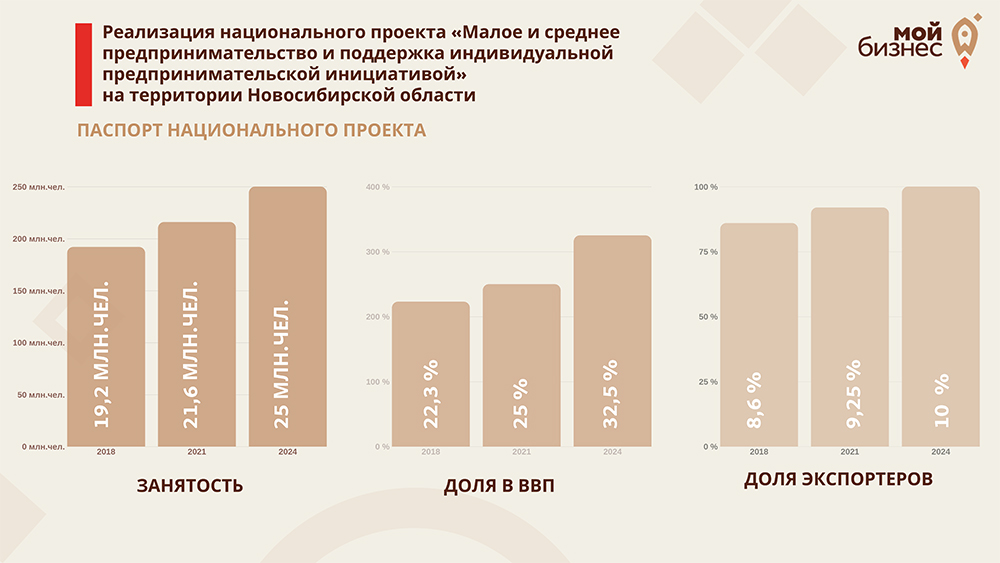
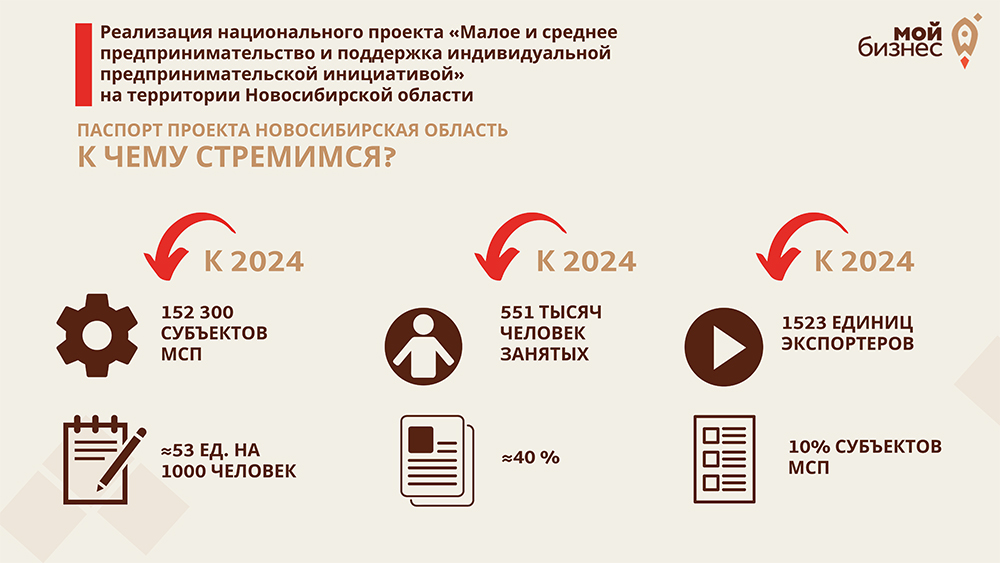

АНО «Центр содействия развитию предпринимательства Новосибирской области» оказывает комплекс услуг, сервисов
и мер поддержки малому и среднему бизнесу. Под руководством АНО работает «Мой бизнес» — центр
комплексной поддержки предпринимателей, ориентированный на помощь в открытии и развитии своего дела:
регистрация бизнеса, оформление ИП, получение информации о мерах господдержки и о том, как ими
воспользоваться.
По данным ФНС России, в Новосибирской области на 1 января 2019 года было зарегистрировано около 147 тыс. субъектов малого и среднего предпринимательства, а к 2024 году это количество должно вырасти до 152 тыс. Распоряжение Правительства Новосибирской области от 15.10.2019 № 404-рп «Об
автономной некоммерческой организации «Центр содействия развитию предпринимательства Новосибирской
области»»
Распоряжение Правительства Новосибирской области от 15.10.2019 № 404-рп «Об
автономной некоммерческой организации «Центр содействия развитию предпринимательства Новосибирской
области»»
Приказ об
утверждении Регламентов предоставления услуг автономной некоммерческой организации «Центр содействия
развитию предпринимательства Новосибирской области» в новой редакции
Регламент оказания услуг центра «Мой бизнес» Новосибирской области
Центр работает в рамках нацпроекта «Малое и среднее предпринимательство и поддержка индивидуальной предпринимательской инициативы». Основная его задача — увеличить долю малого и среднего бизнеса в ВВП страны с 22% до 32,5% в последующие 6 лет.Нацпроект разработан Минэкономразвития РФ. Документ включает 5 федеральных проектов: улучшение условий ведения предпринимательской деятельности, расширение доступа субъектов МСП к финресурсам, акселерация субъектов МСП, создание системы поддержки фермеров и развитие сельской кооперации, популяризация предпринимательства.

На реализацию нацпроекта по всей стране до 2024 года выделили 481,5 млрд ₽.
По данным ФНС России, в Новосибирской области на 1 января 2019 года было зарегистрировано около 147 тыс. субъектов малого и среднего предпринимательства, а к 2024 году это количество должно вырасти до 152 тыс.

Структура центра
- Центр поддержки предпринимательства Новосибирской области (ЦПП НСО)
- Фонд микрофинансирования Новосибирской области (региональная микрокредитная организация)
- Гарантийный фонд Новосибирской области (региональная гарантийная организация)
- Центр инноваций социальной сферы Новосибирской области (ЦИСС НСО)
- Центр поддержки экспорта Новосибирской области (ЦПЭ НСО)
- Фонд развития промышленности Новосибирской области (ФРП НСО)
- Региональный центр инжиниринга (РЦИ НСО).
- Приёмная торгово-промышленной палаты Новосибирской области
- Окна МФЦ для бизнеса
- Региональное отделение «МСП Банк»